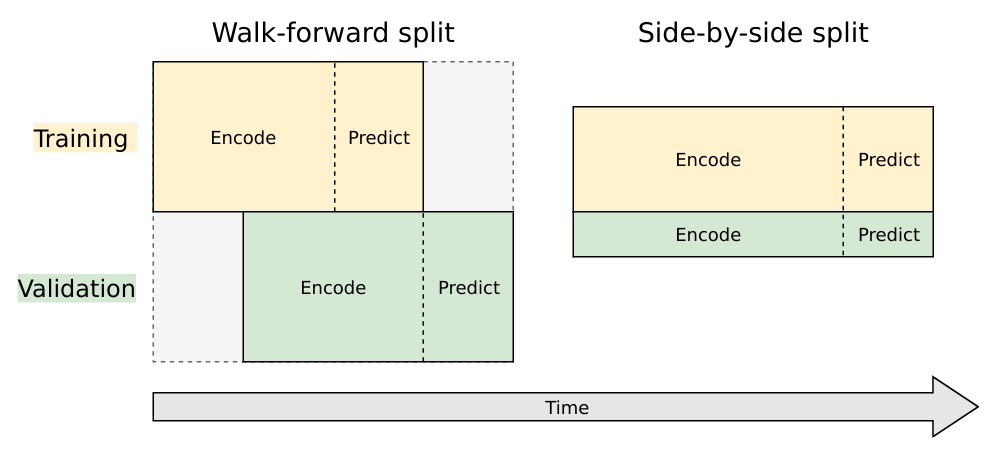

<!DOCTYPE html>
<html class="has-navbar-fixed-top">
<head><meta name="generator" content="Hexo 3.8.0">
    <meta charset="utf-8">
<title>Seq2Seq系列(一)：基于神经网络的高维时间序列预测 - Lady Chili&#39;s Kitchen</title>
<meta name="viewport" content="width=device-width, initial-scale=1, maximum-scale=1">

<link rel="stylesheet" href="//cdnjs.cloudflare.com/ajax/libs/outdated-browser/1.1.5/outdatedbrowser.min.css">


<link href="/TS-seq2seq-intro/" rel="alternate" hreflang="en">
    


<meta name="description" content="It is better to burn out than to fade away.">


    <meta name="description" content="此Notebook旨在通过Python/Keras来验证 seq2seq神经网络如何做时间序列预测，尤其是在高维时间序列——也就是说，必须同步预测大量（10万+）序列的场景下。神经网络相对传统序列分析模型如ARIMA最有优势的地方在于——无需建立大量fine-tuned、针对序列的模型参数。">
<meta name="keywords" content="教程,机器学习,神经网络,算法,时间序列,译作">
<meta property="og:type" content="article">
<meta property="og:title" content="Seq2Seq系列(一)：基于神经网络的高维时间序列预测">
<meta property="og:url" content="https://ladychili.top/zh-cn/TS-seq2seq-intro/index.html">
<meta property="og:site_name" content="Lady Chili&#39;s Kitchen">
<meta property="og:description" content="此Notebook旨在通过Python/Keras来验证 seq2seq神经网络如何做时间序列预测，尤其是在高维时间序列——也就是说，必须同步预测大量（10万+）序列的场景下。神经网络相对传统序列分析模型如ARIMA最有优势的地方在于——无需建立大量fine-tuned、针对序列的模型参数。">
<meta property="og:locale" content="zh-cn">
<meta property="og:image" content="https://ladychili.top/images/TS-seq2seq-intro.png">
<meta property="og:image" content="https://ladychili.top/zh-cn/TS-seq2seq-intro/image-20191030184701331.png">
<meta property="og:image" content="https://ladychili.top/zh-cn/TS-seq2seq-intro/image-20191030190714122.png">
<meta property="og:image" content="https://ladychili.top/zh-cn/TS-seq2seq-intro/image-20191031104113257.png">
<meta property="og:image" content="https://ladychili.top/zh-cn/TS-seq2seq-intro/image-20191031114945794.png">
<meta property="og:image" content="https://ladychili.top/zh-cn/TS-seq2seq-intro/image-20191101145155755.png">
<meta property="og:image" content="https://ladychili.top/zh-cn/TS-seq2seq-intro/image-20191101171606978.png">
<meta property="og:image" content="https://ladychili.top/zh-cn/TS-seq2seq-intro/image-20191101171704692.png">
<meta property="og:image" content="https://ladychili.top/zh-cn/TS-seq2seq-intro/image-20191101171743064.png">
<meta property="og:updated_time" content="2019-11-01T10:19:00.978Z">
<meta name="twitter:card" content="summary">
<meta name="twitter:title" content="Seq2Seq系列(一)：基于神经网络的高维时间序列预测">
<meta name="twitter:description" content="此Notebook旨在通过Python/Keras来验证 seq2seq神经网络如何做时间序列预测，尤其是在高维时间序列——也就是说，必须同步预测大量（10万+）序列的场景下。神经网络相对传统序列分析模型如ARIMA最有优势的地方在于——无需建立大量fine-tuned、针对序列的模型参数。">
<meta name="twitter:image" content="https://ladychili.top/images/TS-seq2seq-intro.png">


<link rel="icon" href="/images/favicon.ico">


<link rel="stylesheet" href="//fonts.googleapis.com/css?family=Ovo|Source+Code+Pro">
<link rel="stylesheet" href="//cdnjs.cloudflare.com/ajax/libs/bulma/0.6.2/css/bulma.min.css">


<link rel="stylesheet" href="//cdnjs.cloudflare.com/ajax/libs/lightgallery/1.6.8/css/lightgallery.min.css">
<link rel="stylesheet" href="//cdnjs.cloudflare.com/ajax/libs/justifiedGallery/3.6.5/css/justifiedGallery.min.css">


<link rel="stylesheet" href="//cdnjs.cloudflare.com/ajax/libs/highlight.js/9.12.0/styles/atom-one-light.min.css">

<link rel="stylesheet" href="/css/style.css">

<script defer src="//use.fontawesome.com/releases/v5.0.8/js/all.js"></script>


    
    
    
    
    
    
    
    
    
    
<script async src="https://www.googletagmanager.com/gtag/js?id=UA-139609057-1"></script>
<script>
    window.dataLayer = window.dataLayer || [];
    function gtag(){dataLayer.push(arguments);}
    gtag('js', new Date());

    gtag('config', 'UA-139609057-1');
</script>


    


</head>
<body>
    
<nav class="navbar is-transparent is-fixed-top navbar-main" role="navigation" aria-label="main navigation">
    <div class="container">
        <div class="navbar-brand">
            <a class="navbar-item navbar-logo" href="/zh-cn">
                
                    
                    
                    
                
            </a>
            <div class="navbar-burger">
                <span></span>
                <span></span>
                <span></span>
            </div>
        </div>
        
        <div class="navbar-menu navbar-start">
            
            <a class="navbar-item " href="/zh-cn/archives">归档</a>
            
            <a class="navbar-item " href="/zh-cn/categories">分类</a>
            
            <a class="navbar-item " href="/zh-cn/tags">标签</a>
            
            <a class="navbar-item " href="/zh-cn/about">关于</a>
            
        </div>
        
        <div class="navbar-menu navbar-end">
            
            <a class="navbar-item search" title="搜索" href="javascript:;">
                <i class="fas fa-search"></i>
            </a>
            
            
            <div class="navbar-item is-hoverable has-dropdown is-hidden-mobile is-hidden-tablet-only toc">
                <a class="navbar-item" title="目录">
                    <i class="fa fa-list"></i>
                </a>
                <div class="navbar-dropdown is-right">
                    
                    
                    
                    
                    <a class="navbar-item" href="#数据载入和预览">1&nbsp;&nbsp;<b>数据载入和预览</b></a>
                    
                    
                    <hr class="navbar-divider">
                    
                    
                    <a class="navbar-item" href="#数据格式化">2&nbsp;&nbsp;<b>数据格式化</b></a>
                    
                    
                    
                    <a class="navbar-item" href="#分割训练序列和验证序列">2.1&nbsp;&nbsp;分割训练序列和验证序列</a>
                    
                    
                    
                    <a class="navbar-item" href="#数据格式化-for-keras">2.2&nbsp;&nbsp;数据格式化 for Keras</a>
                    
                    
                    <hr class="navbar-divider">
                    
                    
                    <a class="navbar-item" href="#建模---training-architecture">3&nbsp;&nbsp;<b>建模 - Training Architecture</b></a>
                    
                    
                    <hr class="navbar-divider">
                    
                    
                    <a class="navbar-item" href="#建模---inference-architecture">4&nbsp;&nbsp;<b>建模 - Inference Architecture</b></a>
                    
                    
                    <hr class="navbar-divider">
                    
                    
                    <a class="navbar-item" href="#生成预测并可视化">5&nbsp;&nbsp;<b>生成预测并可视化</b></a>
                    
                </div>
            </div>
            
            
            <a class="navbar-item" title="GitHub" href="https://github.com/ladychili">
                
                <i class="fab fa-github"></i>
                
            </a>
               
            
        </div>
    </div>
</nav>

    <section class="section">
    <div class="container">
    <article class="article content gallery" itemscope itemprop="blogPost">
    <h1 class="article-title is-size-3 is-size-4-mobile" itemprop="name">
        
            Seq2Seq系列(一)：基于神经网络的高维时间序列预测
        
    </h1>
    <div class="article-meta columns is-variable is-1 is-multiline is-mobile is-size-7-mobile">
        <span class="column is-narrow">
            <time datetime="2019-11-01T09:19:39.000Z" itemprop="datePublished">11月 1 2019</time>
        </span>
        
        <span class="column is-narrow article-category">
            <i class="far fa-folder"></i>
            <a class="article-category-link" href="/zh-cn/categories/Tech/">Tech</a>
        </span>
        
        
        <span class="column is-narrow">
            
            
            21 分钟 读完 (约 3208 字)
        </span>
        
    </div>
    <div class="article-entry is-size-6-mobile" itemprop="articleBody">
    
        <p></p>
<p>此Notebook旨在通过Python/Keras来验证 seq2seq神经网络如何做时间序列预测，尤其是在高维时间序列——也就是说，必须同步预测大量（10万+）序列的场景下。神经网络相对传统序列分析模型如ARIMA最有优势的地方在于——无需建立大量fine-tuned、针对序列的模型参数。</p>
<a id="more"></a>
<p>本文使用的数据是 <a href="https://www.kaggle.com/c/web-traffic-time-series-forecasting/data" target="_blank" rel="noopener">Kaggle</a> 的维基百科页面流量，对应的比赛赛题是向前预测未来60天，但这里我们只预测未来14天。不过，模型的编码(encoding)阶段将用到&quot;train_1.csv&quot;里所有的历史序列。本文的重点在于完成seq2seq核心结构的一个相对简单的实现，而不是训练一个最优模型（此部分请参考此系列后续的文章）。大致内容如下</p>
<ol type="1">
<li><p>数据载入和预览</p></li>
<li>数据格式化</li>
<li>建模 - <strong>Training Architecture</strong></li>
<li>建模 - <strong>Inference Architecture</strong></li>
<li><p>生成预测并可视化</p></li>
</ol>
<h3 id="数据载入和预览">数据载入和预览</h3>
<figure class="highlight python hljs"><table><tr><td class="gutter"><pre><span class="line">1</span><br><span class="line">2</span><br><span class="line">3</span><br><span class="line">4</span><br><span class="line">5</span><br><span class="line">6</span><br><span class="line">7</span><br><span class="line">8</span><br><span class="line">9</span><br><span class="line">10</span><br></pre></td><td class="code"><pre><span class="line"><span class="hljs-keyword">import</span> pandas <span class="hljs-keyword">as</span> pd</span><br><span class="line"><span class="hljs-keyword">import</span> numpy <span class="hljs-keyword">as</span> np</span><br><span class="line"><span class="hljs-keyword">import</span> matplotlib.pyplot <span class="hljs-keyword">as</span> plt</span><br><span class="line">%matplotlib inline</span><br><span class="line"></span><br><span class="line"><span class="hljs-keyword">import</span> seaborn <span class="hljs-keyword">as</span> sns</span><br><span class="line">sns.set()</span><br><span class="line"></span><br><span class="line">df = pd.read_csv(<span class="hljs-string">'../data/train_1.csv'</span>)</span><br><span class="line">df.head()</span><br></pre></td></tr></table></figure>
<p></p>
<p>可以看到，数据包含大量NaN值，方便起见，后面将会用0填充。</p>
<figure class="highlight python hljs"><table><tr><td class="gutter"><pre><span class="line">1</span><br><span class="line">2</span><br><span class="line">3</span><br><span class="line">4</span><br><span class="line">5</span><br></pre></td><td class="code"><pre><span class="line">df.info()</span><br><span class="line"></span><br><span class="line">data_start_date = df.columns[<span class="hljs-number">1</span>]</span><br><span class="line">data_end_date = df.columns[<span class="hljs-number">-1</span>]</span><br><span class="line">print(<span class="hljs-string">'Data ranges from %s to %s'</span> % (data_start_date, data_end_date))</span><br></pre></td></tr></table></figure>
<p>输出： <figure class="highlight plain hljs"><table><tr><td class="gutter"><pre><span class="line">1</span><br><span class="line">2</span><br><span class="line">3</span><br><span class="line">4</span><br><span class="line">5</span><br><span class="line">6</span><br><span class="line">7</span><br></pre></td><td class="code"><pre><span class="line">&lt;class &apos;pandas.core.frame.DataFrame&apos;&gt;</span><br><span class="line">RangeIndex: 145063 entries, 0 to 145062</span><br><span class="line">Columns: 551 entries, Page to 2016-12-31</span><br><span class="line">dtypes: float64(550), object(1)</span><br><span class="line">memory usage: 609.8+ MB</span><br><span class="line"></span><br><span class="line">Data ranges from 2015-07-01 to 2016-12-31</span><br></pre></td></tr></table></figure></p>
<p>定义一个函数——随机选取一些网页的序列数据进行可视化，如下图。此外，为了防止被选中的序列在浮动范围上有较大不同，这里做了一个log1p转换：把序列中的每个 <span class="math inline">\(x\)</span> 转为 <span class="math inline">\(\log(1+x)\)</span>。</p>
<figure class="highlight python hljs"><table><tr><td class="gutter"><pre><span class="line">1</span><br><span class="line">2</span><br><span class="line">3</span><br><span class="line">4</span><br><span class="line">5</span><br><span class="line">6</span><br><span class="line">7</span><br><span class="line">8</span><br><span class="line">9</span><br><span class="line">10</span><br><span class="line">11</span><br><span class="line">12</span><br></pre></td><td class="code"><pre><span class="line"><span class="hljs-function"><span class="hljs-keyword">def</span> <span class="hljs-title">plot_random_series</span><span class="hljs-params">(df, n_series)</span>:</span></span><br><span class="line">    sample = df.sample(n_series, random_state=<span class="hljs-number">8</span>)</span><br><span class="line">    page_labels = sample[<span class="hljs-string">'Page'</span>].tolist()</span><br><span class="line">    series_samples = sample.loc[:,data_start_date:data_end_date]</span><br><span class="line">    plt.figure(figsize=(<span class="hljs-number">10</span>,<span class="hljs-number">6</span>))</span><br><span class="line">    <span class="hljs-keyword">for</span> i <span class="hljs-keyword">in</span> range(series_samples.shape[<span class="hljs-number">0</span>]):</span><br><span class="line">        np.log1p(pd.Series(series_samples.iloc[i]).astype(np.float64)).plot(linewidth=<span class="hljs-number">1.5</span>)</span><br><span class="line"></span><br><span class="line">    plt.title(<span class="hljs-string">'Randomly Selected Wikipedia Page Daily Views Over Time (Log(views) + 1)'</span>)</span><br><span class="line">    plt.legend(page_labels)</span><br><span class="line">    </span><br><span class="line">plot_random_series(df, <span class="hljs-number">6</span>)</span><br></pre></td></tr></table></figure>
<p></p>
<h3 id="数据格式化">数据格式化</h3>
<p>遗憾的是，我们不能把现成的dataframe直接丢给Keras处理，而是需要通过几个数据转换步骤来得到一系列numpy数组，然后再传入Keras。在这之前，首先要弄清楚如何恰当地把时间序列分割成编码段(Encoding intervals) 和解码段 (decoding intervals)，用来训练和验证我们的模型。</p>
<p>本文使用 walk-forward validation来划分训练和验证集——设定一个时间范围作为训练集，向右平移一个时间段（本例为14天）得到验证集，从而验证模型在未知数据上的性能。<a href="https://github.com/Arturus/kaggle-web-traffic/blob/master/how_it_works.md" target="_blank" rel="noopener">Artur Suilin</a> 画了一个非常形象的示意图，将这种验证机制与传统的side-by-side验证机制做了对比。在此强烈推荐看一下他的整个repo，用此维基百科页面流量数据训练了首屈一指的seq2seq模型，在此次竞赛中获得金牌。</p>
<p></p>
<h4 id="分割训练序列和验证序列">分割训练序列和验证序列</h4>
<p>把数据分割成如下4个子段：</p>
<ol type="1">
<li>训练集编码段</li>
<li>训练集解码段（训练目标，长度为14天）</li>
<li>验证集编码段</li>
<li>验证集解码段（验证目标，长度为14天）</li>
</ol>
<blockquote>
<p>译者按：以上1 2 3 4 即 x_train, y_train, x_test, y_test</p>
</blockquote>
<figure class="highlight python hljs"><table><tr><td class="gutter"><pre><span class="line">1</span><br><span class="line">2</span><br><span class="line">3</span><br><span class="line">4</span><br><span class="line">5</span><br><span class="line">6</span><br><span class="line">7</span><br><span class="line">8</span><br><span class="line">9</span><br><span class="line">10</span><br><span class="line">11</span><br><span class="line">12</span><br><span class="line">13</span><br><span class="line">14</span><br><span class="line">15</span><br><span class="line">16</span><br><span class="line">17</span><br><span class="line">18</span><br><span class="line">19</span><br><span class="line">20</span><br><span class="line">21</span><br><span class="line">22</span><br><span class="line">23</span><br><span class="line">24</span><br><span class="line">25</span><br><span class="line">26</span><br><span class="line">27</span><br><span class="line">28</span><br><span class="line">29</span><br></pre></td><td class="code"><pre><span class="line"><span class="hljs-keyword">from</span> datetime <span class="hljs-keyword">import</span> timedelta</span><br><span class="line"></span><br><span class="line">pred_steps = <span class="hljs-number">14</span></span><br><span class="line">pred_length=timedelta(pred_steps)</span><br><span class="line"></span><br><span class="line">first_day = pd.to_datetime(data_start_date) </span><br><span class="line">last_day = pd.to_datetime(data_end_date)</span><br><span class="line"></span><br><span class="line">val_pred_start = last_day - pred_length + timedelta(<span class="hljs-number">1</span>)</span><br><span class="line">val_pred_end = last_day</span><br><span class="line"></span><br><span class="line">train_pred_start = val_pred_start - pred_length</span><br><span class="line">train_pred_end = val_pred_start - timedelta(days=<span class="hljs-number">1</span>)</span><br><span class="line"></span><br><span class="line">enc_length = train_pred_start - first_day</span><br><span class="line"></span><br><span class="line">train_enc_start = first_day</span><br><span class="line">train_enc_end = train_enc_start + enc_length - timedelta(<span class="hljs-number">1</span>)</span><br><span class="line"></span><br><span class="line">val_enc_start = train_enc_start + pred_length</span><br><span class="line">val_enc_end = val_enc_start + enc_length - timedelta(<span class="hljs-number">1</span>) </span><br><span class="line"></span><br><span class="line">print(<span class="hljs-string">'Train encoding:'</span>, train_enc_start, <span class="hljs-string">'-'</span>, train_enc_end)</span><br><span class="line">print(<span class="hljs-string">'Train prediction:'</span>, train_pred_start, <span class="hljs-string">'-'</span>, train_pred_end, <span class="hljs-string">'\n'</span>)</span><br><span class="line">print(<span class="hljs-string">'Val encoding:'</span>, val_enc_start, <span class="hljs-string">'-'</span>, val_enc_end)</span><br><span class="line">print(<span class="hljs-string">'Val prediction:'</span>, val_pred_start, <span class="hljs-string">'-'</span>, val_pred_end)</span><br><span class="line"></span><br><span class="line">print(<span class="hljs-string">'\nEncoding interval:'</span>, enc_length.days)</span><br><span class="line">print(<span class="hljs-string">'Prediction interval:'</span>, pred_length.days)</span><br></pre></td></tr></table></figure>
<p>输出： <figure class="highlight plain hljs"><table><tr><td class="gutter"><pre><span class="line">1</span><br><span class="line">2</span><br><span class="line">3</span><br><span class="line">4</span><br><span class="line">5</span><br><span class="line">6</span><br><span class="line">7</span><br><span class="line">8</span><br></pre></td><td class="code"><pre><span class="line">Train encoding: 2015-07-01 00:00:00 - 2016-12-03 00:00:00</span><br><span class="line">Train prediction: 2016-12-04 00:00:00 - 2016-12-17 00:00:00 </span><br><span class="line"></span><br><span class="line">Val encoding: 2015-07-15 00:00:00 - 2016-12-17 00:00:00</span><br><span class="line">Val prediction: 2016-12-18 00:00:00 - 2016-12-31 00:00:00</span><br><span class="line"></span><br><span class="line">Encoding interval: 522</span><br><span class="line">Prediction interval: 14</span><br></pre></td></tr></table></figure></p>
<h4 id="数据格式化-for-keras">数据格式化 for Keras</h4>
<p>有了时间子段的日期后，就可以开始编写函数把数据转换为Keras适用的格式了，具体步骤：</p>
<ol type="1">
<li>把时间序列转为numpy array，并用 date_to_index 变量来存储日期和索引之间的对应关系。</li>
<li>编写函数<code>get_time_block_series()</code> 从所有序列中提取具体的时间段</li>
<li>编写函数用于处理所有时间序列
<ul>
<li>用 「log1p 转换」和「减去序列均值」的方式平滑序列的数值范围，然后转换为适用于Keras的 <strong>(n_series, n_timesteps, n_features)</strong> 张量。</li>
<li>同时编写一个逆转换函数，用于把log scale的预测值转回真实范围的预测值。</li>
</ul></li>
</ol>
<figure class="highlight python hljs"><table><tr><td class="gutter"><pre><span class="line">1</span><br><span class="line">2</span><br><span class="line">3</span><br><span class="line">4</span><br><span class="line">5</span><br><span class="line">6</span><br><span class="line">7</span><br><span class="line">8</span><br><span class="line">9</span><br><span class="line">10</span><br><span class="line">11</span><br><span class="line">12</span><br><span class="line">13</span><br><span class="line">14</span><br><span class="line">15</span><br><span class="line">16</span><br><span class="line">17</span><br><span class="line">18</span><br><span class="line">19</span><br><span class="line">20</span><br><span class="line">21</span><br><span class="line">22</span><br><span class="line">23</span><br></pre></td><td class="code"><pre><span class="line"><span class="hljs-comment"># 1.</span></span><br><span class="line">date_to_index = pd.Series(index=pd.Index([pd.to_datetime(c) <span class="hljs-keyword">for</span> c <span class="hljs-keyword">in</span> df.columns[<span class="hljs-number">1</span>:]]),</span><br><span class="line">                          data=[i <span class="hljs-keyword">for</span> i <span class="hljs-keyword">in</span> range(len(df.columns[<span class="hljs-number">1</span>:]))])</span><br><span class="line">series_array = df[df.columns[<span class="hljs-number">1</span>:]].values</span><br><span class="line"></span><br><span class="line"><span class="hljs-comment"># 2.</span></span><br><span class="line"><span class="hljs-function"><span class="hljs-keyword">def</span> <span class="hljs-title">get_time_block_series</span><span class="hljs-params">(series_array, date_to_index, start_date, end_date)</span>:</span></span><br><span class="line">    inds = date_to_index[start_date:end_date]</span><br><span class="line">    <span class="hljs-keyword">return</span> series_array[:,inds]</span><br><span class="line"></span><br><span class="line"><span class="hljs-comment">#3.</span></span><br><span class="line"><span class="hljs-function"><span class="hljs-keyword">def</span> <span class="hljs-title">transform_series_encode</span><span class="hljs-params">(series_array)</span>:</span></span><br><span class="line">    series_array = np.log1p(np.nan_to_num(series_array)) <span class="hljs-comment"># filling NaN with 0</span></span><br><span class="line">    series_mean = series_array.mean(axis=<span class="hljs-number">1</span>).reshape(<span class="hljs-number">-1</span>,<span class="hljs-number">1</span>) </span><br><span class="line">    series_array = series_array - series_mean</span><br><span class="line">    series_array = series_array.reshape((series_array.shape[<span class="hljs-number">0</span>],series_array.shape[<span class="hljs-number">1</span>], <span class="hljs-number">1</span>))</span><br><span class="line">    <span class="hljs-keyword">return</span> series_array, series_mean</span><br><span class="line"></span><br><span class="line"><span class="hljs-function"><span class="hljs-keyword">def</span> <span class="hljs-title">transform_series_decode</span><span class="hljs-params">(series_array, encode_series_mean)</span>:</span></span><br><span class="line">    series_array = np.log1p(np.nan_to_num(series_array)) <span class="hljs-comment"># filling NaN with 0</span></span><br><span class="line">    series_array = series_array - encode_series_mean</span><br><span class="line">    series_array = series_array.reshape((series_array.shape[<span class="hljs-number">0</span>],series_array.shape[<span class="hljs-number">1</span>], <span class="hljs-number">1</span>))</span><br><span class="line">    <span class="hljs-keyword">return</span> series_array</span><br></pre></td></tr></table></figure>
<h3 id="建模---training-architecture">建模 - Training Architecture</h3>
<p>本章节的模型结构和代码改编自 <a href="https://blog.keras.io/a-ten-minute-introduction-to-sequence-to-sequence-learning-in-keras.html" target="_blank" rel="noopener">keras blog introduction to seq2seq</a> 。Chollet的例子展示了经典seq2seq在机器翻译上的应用，我们这里要实现的步骤和它十分相似。在训练时使用teacher forcing方法，把真实的序列值（滞后一个时间步长）作为解码器的输入。直观来讲就是教Neural Net模型如何通过拟合之前的time steps来预测下一个time step。</p>
<p>模型结构如下图（同样来自 <a href="https://github.com/Arturus/kaggle-web-traffic/blob/master/how_it_works.md" target="_blank" rel="noopener">Artur Suilin</a>）所示，只不过我们用的是LSTM而不是GRU。</p>
<p></p>
<figure class="highlight python hljs"><table><tr><td class="gutter"><pre><span class="line">1</span><br><span class="line">2</span><br><span class="line">3</span><br></pre></td><td class="code"><pre><span class="line"><span class="hljs-keyword">from</span> keras.models <span class="hljs-keyword">import</span> Model</span><br><span class="line"><span class="hljs-keyword">from</span> keras.layers <span class="hljs-keyword">import</span> Input, LSTM, Dense</span><br><span class="line"><span class="hljs-keyword">from</span> keras.optimizers <span class="hljs-keyword">import</span> Adam</span><br></pre></td></tr></table></figure>
<blockquote>
<p>译者按：若TensorFlow的版本是2.0及以上，import模块时需把 keras.xxx 替换为 tensorflow.keras.xxx</p>
</blockquote>
<figure class="highlight python hljs"><table><tr><td class="gutter"><pre><span class="line">1</span><br><span class="line">2</span><br><span class="line">3</span><br><span class="line">4</span><br><span class="line">5</span><br><span class="line">6</span><br><span class="line">7</span><br><span class="line">8</span><br><span class="line">9</span><br><span class="line">10</span><br><span class="line">11</span><br><span class="line">12</span><br><span class="line">13</span><br><span class="line">14</span><br><span class="line">15</span><br><span class="line">16</span><br><span class="line">17</span><br><span class="line">18</span><br><span class="line">19</span><br><span class="line">20</span><br><span class="line">21</span><br><span class="line">22</span><br><span class="line">23</span><br><span class="line">24</span><br><span class="line">25</span><br><span class="line">26</span><br><span class="line">27</span><br><span class="line">28</span><br><span class="line">29</span><br><span class="line">30</span><br></pre></td><td class="code"><pre><span class="line">latent_dim = <span class="hljs-number">50</span> <span class="hljs-comment"># LSTM hidden units</span></span><br><span class="line">dropout = <span class="hljs-number">.20</span> </span><br><span class="line"></span><br><span class="line"><span class="hljs-comment"># Define an input series and encode it with an LSTM. </span></span><br><span class="line">encoder_inputs = Input(shape=(<span class="hljs-literal">None</span>, <span class="hljs-number">1</span>)) </span><br><span class="line">encoder = LSTM(latent_dim, dropout=dropout, return_state=<span class="hljs-literal">True</span>)</span><br><span class="line">encoder_outputs, state_h, state_c = encoder(encoder_inputs)</span><br><span class="line"></span><br><span class="line"><span class="hljs-comment"># We discard `encoder_outputs` and only keep the final states. These represent the "context"</span></span><br><span class="line"><span class="hljs-comment"># vector that we use as the basis for decoding.</span></span><br><span class="line">encoder_states = [state_h, state_c]</span><br><span class="line"></span><br><span class="line"><span class="hljs-comment"># Set up the decoder, using `encoder_states` as initial state.</span></span><br><span class="line"><span class="hljs-comment"># This is where teacher forcing inputs are fed in.</span></span><br><span class="line">decoder_inputs = Input(shape=(<span class="hljs-literal">None</span>, <span class="hljs-number">1</span>)) </span><br><span class="line"></span><br><span class="line"><span class="hljs-comment"># We set up our decoder using `encoder_states` as initial state.  </span></span><br><span class="line"><span class="hljs-comment"># We return full output sequences and return internal states as well. </span></span><br><span class="line"><span class="hljs-comment"># We don't use the return states in the training model, but we will use them in inference.</span></span><br><span class="line">decoder_lstm = LSTM(latent_dim, dropout=dropout, return_sequences=<span class="hljs-literal">True</span>, return_state=<span class="hljs-literal">True</span>)</span><br><span class="line">decoder_outputs, _, _ = decoder_lstm(decoder_inputs,</span><br><span class="line">                                     initial_state=encoder_states)</span><br><span class="line"></span><br><span class="line">decoder_dense = Dense(<span class="hljs-number">1</span>) <span class="hljs-comment"># 1 continuous output at each timestep</span></span><br><span class="line">decoder_outputs = decoder_dense(decoder_outputs)</span><br><span class="line"></span><br><span class="line"><span class="hljs-comment"># Define the model that will turn</span></span><br><span class="line"><span class="hljs-comment"># `encoder_input_data` &amp; `decoder_input_data` into `decoder_target_data`</span></span><br><span class="line">model = Model([encoder_inputs, decoder_inputs], decoder_outputs)</span><br><span class="line">model.summary()</span><br></pre></td></tr></table></figure>
<p>输出： <figure class="highlight plain hljs"><table><tr><td class="gutter"><pre><span class="line">1</span><br><span class="line">2</span><br><span class="line">3</span><br><span class="line">4</span><br><span class="line">5</span><br><span class="line">6</span><br><span class="line">7</span><br><span class="line">8</span><br><span class="line">9</span><br><span class="line">10</span><br><span class="line">11</span><br><span class="line">12</span><br><span class="line">13</span><br><span class="line">14</span><br><span class="line">15</span><br><span class="line">16</span><br><span class="line">17</span><br><span class="line">18</span><br><span class="line">19</span><br><span class="line">20</span><br></pre></td><td class="code"><pre><span class="line">Model: &quot;model&quot;</span><br><span class="line">________________________________________________________________________________________</span><br><span class="line">Layer (type)                    Output Shape         Param #     Connected to                     </span><br><span class="line">========================================================================================</span><br><span class="line">input_1 (InputLayer)            [(None, None, 1)]    0                                            </span><br><span class="line">________________________________________________________________________________________</span><br><span class="line">input_2 (InputLayer)            [(None, None, 1)]    0                                            </span><br><span class="line">________________________________________________________________________________________</span><br><span class="line">lstm (LSTM)                     [(None, 50), (None,  10400       input_1[0][0]                    </span><br><span class="line">________________________________________________________________________________________</span><br><span class="line">lstm_1 (LSTM)                   [(None, None, 50), ( 10400       input_2[0][0]                    </span><br><span class="line">                                                                 lstm[0][1]                       </span><br><span class="line">                                                                 lstm[0][2]                       </span><br><span class="line">________________________________________________________________________________________</span><br><span class="line">dense (Dense)                   (None, None, 1)      51          lstm_1[0][0]                     </span><br><span class="line">========================================================================================</span><br><span class="line">Total params: 20,851</span><br><span class="line">Trainable params: 20,851</span><br><span class="line">Non-trainable params: 0</span><br><span class="line">________________________________________________________________________________________</span><br></pre></td></tr></table></figure></p>
<p>模型结构定义好以后就可以开始训练了，GPU不是太好的话，这里可能要花上几分钟。</p>
<p>利用先前定义的函数处理序列数据，传给模型。训练时损失函数选平均绝对误差（Mean Absolute Error）。你也可以通过增加数据量、调超参（learning rate, epoch数等）来优化模型。</p>
<figure class="highlight python hljs"><table><tr><td class="gutter"><pre><span class="line">1</span><br><span class="line">2</span><br><span class="line">3</span><br><span class="line">4</span><br><span class="line">5</span><br><span class="line">6</span><br><span class="line">7</span><br><span class="line">8</span><br><span class="line">9</span><br><span class="line">10</span><br><span class="line">11</span><br><span class="line">12</span><br><span class="line">13</span><br><span class="line">14</span><br><span class="line">15</span><br><span class="line">16</span><br><span class="line">17</span><br><span class="line">18</span><br><span class="line">19</span><br><span class="line">20</span><br><span class="line">21</span><br><span class="line">22</span><br><span class="line">23</span><br><span class="line">24</span><br></pre></td><td class="code"><pre><span class="line">first_n_samples = <span class="hljs-number">20000</span></span><br><span class="line">batch_size = <span class="hljs-number">2</span>**<span class="hljs-number">11</span></span><br><span class="line">epochs = <span class="hljs-number">100</span></span><br><span class="line"></span><br><span class="line"><span class="hljs-comment"># sample of series from train_enc_start to train_enc_end  </span></span><br><span class="line">encoder_input_data = get_time_block_series(series_array, date_to_index, </span><br><span class="line">                                           train_enc_start, train_enc_end)[:first_n_samples]</span><br><span class="line">encoder_input_data, encode_series_mean = transform_series_encode(encoder_input_data)</span><br><span class="line"></span><br><span class="line"><span class="hljs-comment"># sample of series from train_pred_start to train_pred_end </span></span><br><span class="line">decoder_target_data = get_time_block_series(series_array, date_to_index, </span><br><span class="line">                                            train_pred_start, train_pred_end)[:first_n_samples]</span><br><span class="line">decoder_target_data = transform_series_decode(decoder_target_data, encode_series_mean)</span><br><span class="line"></span><br><span class="line"><span class="hljs-comment"># lagged target series for teacher forcing</span></span><br><span class="line">decoder_input_data = np.zeros(decoder_target_data.shape)</span><br><span class="line">decoder_input_data[:,<span class="hljs-number">1</span>:,<span class="hljs-number">0</span>] = decoder_target_data[:,:<span class="hljs-number">-1</span>,<span class="hljs-number">0</span>]</span><br><span class="line">decoder_input_data[:,<span class="hljs-number">0</span>,<span class="hljs-number">0</span>] = encoder_input_data[:,<span class="hljs-number">-1</span>,<span class="hljs-number">0</span>]</span><br><span class="line"></span><br><span class="line">model.compile(Adam(), loss=<span class="hljs-string">'mean_absolute_error'</span>)</span><br><span class="line">history = model.fit([encoder_input_data, decoder_input_data], decoder_target_data,</span><br><span class="line">                     batch_size=batch_size,</span><br><span class="line">                     epochs=epochs,</span><br><span class="line">                     validation_split=<span class="hljs-number">0.2</span>)</span><br></pre></td></tr></table></figure>
<p>输出： <figure class="highlight plain hljs"><table><tr><td class="gutter"><pre><span class="line">1</span><br><span class="line">2</span><br><span class="line">3</span><br><span class="line">4</span><br><span class="line">5</span><br><span class="line">6</span><br><span class="line">7</span><br><span class="line">8</span><br><span class="line">9</span><br><span class="line">10</span><br><span class="line">11</span><br><span class="line">12</span><br></pre></td><td class="code"><pre><span class="line">Train on 16000 samples, validate on 4000 samples</span><br><span class="line">Epoch 1/100</span><br><span class="line">16000/16000 [==============================] - 44s 3ms/sample - loss: 0.6736 - val_loss: 0.5213</span><br><span class="line">Epoch 2/100</span><br><span class="line">16000/16000 [==============================] - 38s 2ms/sample - loss: 0.5390 - val_loss: 0.4113</span><br><span class="line">Epoch 3/100</span><br><span class="line">16000/16000 [==============================] - 37s 2ms/sample - loss: 0.4568 - val_loss: 0.3751</span><br><span class="line">……</span><br><span class="line">Epoch 99/100</span><br><span class="line">16000/16000 [==============================] - 38s 2ms/sample - loss: 0.3007 - val_loss: 0.2858</span><br><span class="line">Epoch 100/100</span><br><span class="line">16000/16000 [==============================] - 35s 2ms/sample - loss: 0.3003 - val_loss: 0.2853</span><br></pre></td></tr></table></figure></p>
<p>画出训练集和验证集上的loss收敛曲线。</p>
<figure class="highlight python hljs"><table><tr><td class="gutter"><pre><span class="line">1</span><br><span class="line">2</span><br><span class="line">3</span><br><span class="line">4</span><br><span class="line">5</span><br><span class="line">6</span><br><span class="line">7</span><br><span class="line">8</span><br></pre></td><td class="code"><pre><span class="line">plt.plot(history.history[<span class="hljs-string">'loss'</span>])</span><br><span class="line">plt.plot(history.history[<span class="hljs-string">'val_loss'</span>])</span><br><span class="line"></span><br><span class="line">plt.xlabel(<span class="hljs-string">'Epoch'</span>)</span><br><span class="line">plt.ylabel(<span class="hljs-string">'Mean Absolute Error Loss'</span>)</span><br><span class="line">plt.title(<span class="hljs-string">'Loss Over Time'</span>)</span><br><span class="line">plt.legend([<span class="hljs-string">'Train'</span>,<span class="hljs-string">'Valid'</span>])</span><br><span class="line">plt.show();</span><br></pre></td></tr></table></figure>
<p></p>
<h3 id="建模---inference-architecture">建模 - Inference Architecture</h3>
<p>到此模型结构方面的还不算完。接下来需要用keras 构造一个 Inference model 利用神经网络来生成预测值。简单来说，模型先编码输入序列，然后挨个生成预测值。解码器从编码器那里接受初始状态向量，然后解码器每生成一个时间步的预测，状态向量就随之迭代更新。</p>
<figure class="highlight python hljs"><table><tr><td class="gutter"><pre><span class="line">1</span><br><span class="line">2</span><br><span class="line">3</span><br><span class="line">4</span><br><span class="line">5</span><br><span class="line">6</span><br><span class="line">7</span><br><span class="line">8</span><br><span class="line">9</span><br><span class="line">10</span><br><span class="line">11</span><br><span class="line">12</span><br><span class="line">13</span><br><span class="line">14</span><br><span class="line">15</span><br><span class="line">16</span><br><span class="line">17</span><br><span class="line">18</span><br><span class="line">19</span><br><span class="line">20</span><br><span class="line">21</span><br><span class="line">22</span><br><span class="line">23</span><br><span class="line">24</span><br><span class="line">25</span><br><span class="line">26</span><br><span class="line">27</span><br><span class="line">28</span><br><span class="line">29</span><br><span class="line">30</span><br><span class="line">31</span><br><span class="line">32</span><br><span class="line">33</span><br><span class="line">34</span><br><span class="line">35</span><br><span class="line">36</span><br><span class="line">37</span><br><span class="line">38</span><br><span class="line">39</span><br><span class="line">40</span><br><span class="line">41</span><br><span class="line">42</span><br><span class="line">43</span><br><span class="line">44</span><br><span class="line">45</span><br><span class="line">46</span><br><span class="line">47</span><br></pre></td><td class="code"><pre><span class="line"><span class="hljs-comment"># from our previous model - mapping encoder sequence to state vectors</span></span><br><span class="line">encoder_model = Model(encoder_inputs, encoder_states)</span><br><span class="line"></span><br><span class="line"><span class="hljs-comment"># A modified version of the decoding stage that takes in predicted target inputs</span></span><br><span class="line"><span class="hljs-comment"># and encoded state vectors, returning predicted target outputs and decoder state vectors.</span></span><br><span class="line"><span class="hljs-comment"># We need to hang onto these state vectors to run the next step of the inference loop.</span></span><br><span class="line">decoder_state_input_h = Input(shape=(latent_dim,))</span><br><span class="line">decoder_state_input_c = Input(shape=(latent_dim,))</span><br><span class="line">decoder_states_inputs = [decoder_state_input_h, decoder_state_input_c]</span><br><span class="line"></span><br><span class="line">decoder_outputs, state_h, state_c = decoder_lstm(decoder_inputs, initial_state=decoder_states_inputs)</span><br><span class="line">decoder_states = [state_h, state_c]</span><br><span class="line"></span><br><span class="line">decoder_outputs = decoder_dense(decoder_outputs)</span><br><span class="line">decoder_model = Model([decoder_inputs] + decoder_states_inputs,</span><br><span class="line">                      [decoder_outputs] + decoder_states)</span><br><span class="line"></span><br><span class="line"><span class="hljs-function"><span class="hljs-keyword">def</span> <span class="hljs-title">decode_sequence</span><span class="hljs-params">(input_seq)</span>:</span></span><br><span class="line">    </span><br><span class="line">    <span class="hljs-comment"># Encode the input as state vectors.</span></span><br><span class="line">    states_value = encoder_model.predict(input_seq)</span><br><span class="line"></span><br><span class="line">    <span class="hljs-comment"># Generate empty target sequence of length 1.</span></span><br><span class="line">    target_seq = np.zeros((<span class="hljs-number">1</span>, <span class="hljs-number">1</span>, <span class="hljs-number">1</span>))</span><br><span class="line">    </span><br><span class="line">    <span class="hljs-comment"># Populate the first target sequence with end of encoding series pageviews</span></span><br><span class="line">    target_seq[<span class="hljs-number">0</span>, <span class="hljs-number">0</span>, <span class="hljs-number">0</span>] = input_seq[<span class="hljs-number">0</span>, <span class="hljs-number">-1</span>, <span class="hljs-number">0</span>]</span><br><span class="line"></span><br><span class="line">    <span class="hljs-comment"># Sampling loop for a batch of sequences - we will fill decoded_seq with predictions</span></span><br><span class="line">    <span class="hljs-comment"># (to simplify, here we assume a batch of size 1).</span></span><br><span class="line"></span><br><span class="line">    decoded_seq = np.zeros((<span class="hljs-number">1</span>,pred_steps,<span class="hljs-number">1</span>))</span><br><span class="line">    </span><br><span class="line">    <span class="hljs-keyword">for</span> i <span class="hljs-keyword">in</span> range(pred_steps):</span><br><span class="line">        </span><br><span class="line">        output, h, c = decoder_model.predict([target_seq] + states_value)</span><br><span class="line">        </span><br><span class="line">        decoded_seq[<span class="hljs-number">0</span>,i,<span class="hljs-number">0</span>] = output[<span class="hljs-number">0</span>,<span class="hljs-number">0</span>,<span class="hljs-number">0</span>]</span><br><span class="line"></span><br><span class="line">        <span class="hljs-comment"># Update the target sequence (of length 1).</span></span><br><span class="line">        target_seq = np.zeros((<span class="hljs-number">1</span>, <span class="hljs-number">1</span>, <span class="hljs-number">1</span>))</span><br><span class="line">        target_seq[<span class="hljs-number">0</span>, <span class="hljs-number">0</span>, <span class="hljs-number">0</span>] = output[<span class="hljs-number">0</span>,<span class="hljs-number">0</span>,<span class="hljs-number">0</span>]</span><br><span class="line"></span><br><span class="line">        <span class="hljs-comment"># Update states</span></span><br><span class="line">        states_value = [h, c]</span><br><span class="line"></span><br><span class="line">    <span class="hljs-keyword">return</span> decoded_seq</span><br></pre></td></tr></table></figure>
<h3 id="生成预测并可视化">生成预测并可视化</h3>
<p>现在一切就绪，可以在「没有用来训练的那部分encoder/target series pairs」上做预测了（译按：就是X_test/y_test pairs）。首先生成验证集（回想一下，这部分数据在时间维度上向右平移了14天），然后以此为输入，定义一个<code>predict_and_plot()</code> 函数，用来生成预测并画出<strong>解码器序列</strong>、<strong>真实目标序列</strong>和<strong>预测目标序列</strong>的末尾段。我们可以从图中看出大致的预测效果。</p>
<figure class="highlight python hljs"><table><tr><td class="gutter"><pre><span class="line">1</span><br><span class="line">2</span><br><span class="line">3</span><br><span class="line">4</span><br><span class="line">5</span><br><span class="line">6</span><br><span class="line">7</span><br><span class="line">8</span><br><span class="line">9</span><br><span class="line">10</span><br><span class="line">11</span><br><span class="line">12</span><br><span class="line">13</span><br><span class="line">14</span><br><span class="line">15</span><br><span class="line">16</span><br><span class="line">17</span><br><span class="line">18</span><br><span class="line">19</span><br><span class="line">20</span><br><span class="line">21</span><br><span class="line">22</span><br><span class="line">23</span><br><span class="line">24</span><br><span class="line">25</span><br><span class="line">26</span><br></pre></td><td class="code"><pre><span class="line">encoder_input_data = get_time_block_series(series_array, date_to_index, val_enc_start, val_enc_end)</span><br><span class="line">encoder_input_data, encode_series_mean = transform_series_encode(encoder_input_data)</span><br><span class="line"></span><br><span class="line">decoder_target_data = get_time_block_series(series_array, date_to_index, val_pred_start, val_pred_end)</span><br><span class="line">decoder_target_data = transform_series_decode(decoder_target_data, encode_series_mean)</span><br><span class="line"></span><br><span class="line"><span class="hljs-function"><span class="hljs-keyword">def</span> <span class="hljs-title">predict_and_plot</span><span class="hljs-params">(encoder_input_data, decoder_target_data, sample_ind, enc_tail_len=<span class="hljs-number">50</span>)</span>:</span></span><br><span class="line"></span><br><span class="line">    encode_series = encoder_input_data[sample_ind:sample_ind+<span class="hljs-number">1</span>,:,:] </span><br><span class="line">    pred_series = decode_sequence(encode_series)</span><br><span class="line">    </span><br><span class="line">    encode_series = encode_series.reshape(<span class="hljs-number">-1</span>,<span class="hljs-number">1</span>)</span><br><span class="line">    pred_series = pred_series.reshape(<span class="hljs-number">-1</span>,<span class="hljs-number">1</span>)   </span><br><span class="line">    target_series = decoder_target_data[sample_ind,:,:<span class="hljs-number">1</span>].reshape(<span class="hljs-number">-1</span>,<span class="hljs-number">1</span>) </span><br><span class="line">    </span><br><span class="line">    encode_series_tail = np.concatenate([encode_series[-enc_tail_len:],target_series[:<span class="hljs-number">1</span>]])</span><br><span class="line">    x_encode = encode_series_tail.shape[<span class="hljs-number">0</span>]</span><br><span class="line">    </span><br><span class="line">    plt.figure(figsize=(<span class="hljs-number">10</span>,<span class="hljs-number">6</span>))   </span><br><span class="line">    </span><br><span class="line">    plt.plot(range(<span class="hljs-number">1</span>,x_encode+<span class="hljs-number">1</span>),encode_series_tail)</span><br><span class="line">    plt.plot(range(x_encode,x_encode+pred_steps),target_series,color=<span class="hljs-string">'orange'</span>)</span><br><span class="line">    plt.plot(range(x_encode,x_encode+pred_steps),pred_series,color=<span class="hljs-string">'teal'</span>,linestyle=<span class="hljs-string">'--'</span>)</span><br><span class="line">    </span><br><span class="line">    plt.title(<span class="hljs-string">'Encoder Series Tail of Length %d, Target Series, and Predictions'</span> % enc_tail_len)</span><br><span class="line">    plt.legend([<span class="hljs-string">'Encoding Series'</span>,<span class="hljs-string">'Target Series'</span>,<span class="hljs-string">'Predictions'</span>])</span><br></pre></td></tr></table></figure>
<p>从下面几个折线图中可以看出，模型的预测值有效的预见了部分趋势，并且知道何时应该趋于平稳。</p>
<p>不过，可以明显看出模型的预测过于保守，数据中许多变化都没能捕获。接下来或许能够通过增大训练样本数量、调整网络结构或者其他超参、增加 epoch 等方法提升模型。</p>
<p>各位看官若想进一步了解更fancy的模型结构和表达性更好的预测，请参考本系列的第二篇。</p>
<figure class="highlight python hljs"><table><tr><td class="gutter"><pre><span class="line">1</span><br></pre></td><td class="code"><pre><span class="line">predict_and_plot(encoder_input_data, decoder_target_data, <span class="hljs-number">100</span>)</span><br></pre></td></tr></table></figure>
<p></p>
<figure class="highlight python hljs"><table><tr><td class="gutter"><pre><span class="line">1</span><br></pre></td><td class="code"><pre><span class="line">predict_and_plot(encoder_input_data, decoder_target_data, <span class="hljs-number">6007</span>)</span><br></pre></td></tr></table></figure>
<p></p>
<figure class="highlight python hljs"><table><tr><td class="gutter"><pre><span class="line">1</span><br></pre></td><td class="code"><pre><span class="line">predict_and_plot(encoder_input_data, decoder_target_data, <span class="hljs-number">33000</span>)</span><br></pre></td></tr></table></figure>
<p></p>
<hr>
<p>本文非博主原创，all credit to 原作者：<a href="https://jeddy92.github.io/JEddy92.github.io/" target="_blank" rel="noopener">Joseph Eddy – Data scientist, teacher, debate coach</a></p>
<p>原文GitHub地址：<a href="https://github.com/JEddy92/TimeSeries_Seq2Seq/blob/master/notebooks/TS_Seq2Seq_Intro.ipynb" target="_blank" rel="noopener">An Introduction to High-Dimensional Time Series Forecasting with Neural Networks</a></p>
<p>如有翻译不当的地方，还请指正。</p>

    
    </div>
    
    <div class="columns is-variable is-1 is-multiline is-mobile">
    
        <span class="column is-narrow"><a class="tag is-light article-tag" href="/zh-cn/tags/教程/">#教程</a></span>
    
        <span class="column is-narrow"><a class="tag is-light article-tag" href="/zh-cn/tags/机器学习/">#机器学习</a></span>
    
        <span class="column is-narrow"><a class="tag is-light article-tag" href="/zh-cn/tags/神经网络/">#神经网络</a></span>
    
        <span class="column is-narrow"><a class="tag is-light article-tag" href="/zh-cn/tags/算法/">#算法</a></span>
    
        <span class="column is-narrow"><a class="tag is-light article-tag" href="/zh-cn/tags/时间序列/">#时间序列</a></span>
    
        <span class="column is-narrow"><a class="tag is-light article-tag" href="/zh-cn/tags/译作/">#译作</a></span>
    
    </div>
    
    
    <div class="columns is-mobile is-multiline article-nav">
        <span class="column is-12-mobile is-half-desktop is-hidden-mobile article-nav-prev">
            
        </span>
        <span class="column is-12-mobile is-half-desktop  article-nav-next">
            
            <a href="/zh-cn/SVM/">当我们谈SVM时我们谈些什么</a>
            
        </span>
    </div>
    
</article>


<div class="sharebox">
    
<div class="addthis_inline_share_toolbox"></div>
<script type="text/javascript" src="//s7.addthis.com/js/300/addthis_widget.js#pubid=ra-5cc5e6d6ca470529"></script>

</div>


<div class="comments">
    <h3 class="title is-4">评论</h3>
    
<div id="valine-thread"></div>
<script src="//cdn1.lncld.net/static/js/3.0.4/av-min.js"></script>
<script src="//unpkg.com/valine/dist/Valine.min.js"></script>
<script>
    new Valine({
        el: '#valine-thread',
        appId: 'Vs0W821bSiwvbyA5IgDc9nLB-gzGzoHsz',
        appKey: 'lJA0l7GehLkXXO6MDlGSBmEi',
        notify: false,
        verify: false,
        avatar: 'retro',
        placeholder: '说点儿什么吧～  ^ ^',
        meta: ['nick', 'mail'],
        visitor: true,
        lang: 'zh-cn'
    })
</script>


</div>

    </div>
</section>
    <footer class="footer">
    <div class="container">
        <div class="columns content">
            <div class="column is-narrow has-text-centered">
                &copy; 2019 Lady Chili&nbsp;
                Powered by <a href="http://hexo.io/" target="_blank">Hexo</a> & <a href="http://github.com/ppoffice/hexo-theme-minos">Minos</a>
            </div>
            <div class="column is-hidden-mobile"></div>

            
            <div class="column is-narrow">
                <div class="columns is-mobile is-multiline is-centered">
                
                    
                <a class="column is-narrow has-text-black" title="GitHub" href="https://github.com/ladychili">
                    
                    <i class="fab fa-github"></i>
                    
                </a>
                
                    
                <a class="column is-narrow has-text-black" title="Telegram" href="http://telegram.me/ladychili">
                    
                    <i class="fab fa-telegram"></i>
                    
                </a>
                
                    
                <a class="column is-narrow has-text-black" title="email" href="mailto:zqt0@outlook.com">
                    
                    <i class="fas fa-envelope"></i>
                    
                </a>
                
                </div>
            </div>
            
            
<div class="column is-narrow has-text-centered">
    <div class="dropdown is-up is-right is-hoverable" style="margin-top: -0.2em;">
        <div class="dropdown-trigger">
            <button class="button is-small" aria-haspopup="true" aria-controls="dropdown-menu7">
                <span class="icon">
                    <i class="fas fa-globe"></i>
                </span>
                <span>简体中文</span>
                <span class="icon is-small">
            <i class="fas fa-angle-down" aria-hidden="true"></i>
          </span>
            </button>
        </div>
        <div class="dropdown-menu has-text-left" role="menu">
            <div class="dropdown-content">
            
                <a href="/TS-seq2seq-intro/" class="dropdown-item">
                    English
                </a>
            
                <a href="/zh-cn/TS-seq2seq-intro/" class="dropdown-item">
                    简体中文
                </a>
            
            </div>
        </div>
    </div>
</div>

        </div>
    </div>
</footer>
    <script src="//cdnjs.cloudflare.com/ajax/libs/jquery/3.3.1/jquery.min.js"></script>
<script src="//cdnjs.cloudflare.com/ajax/libs/moment.js/2.22.2/moment-with-locales.min.js"></script>

<!-- test if the browser is outdated -->
<div id="outdated">
    <h6>Your browser is out-of-date!</h6>
    <p>Update your browser to view this website correctly. <a id="btnUpdateBrowser" href="http://outdatedbrowser.com/">Update my browser now </a></p>
    <p class="last"><a href="#" id="btnCloseUpdateBrowser" title="Close">&times;</a></p>
</div>
<script src="//cdnjs.cloudflare.com/ajax/libs/outdated-browser/1.1.5/outdatedbrowser.min.js"></script>
<script>
    $(document).ready(function () {
        // plugin function, place inside DOM ready function
        outdatedBrowser({
            bgColor: '#f25648',
            color: '#ffffff',
            lowerThan: 'flex'
        })
    });
</script>

<script>
    window.FontAwesomeConfig = {
        searchPseudoElements: true
    }
    moment.locale("zh-CN");
</script>


    
    
<script src="https://cdnjs.cloudflare.com/ajax/libs/mathjax/2.7.4/MathJax.js?config=TeX-MML-AM_CHTML"></script>
<script>
    MathJax.Hub.Config({
        "HTML-CSS": {
            matchFontHeight: false
        },
        SVG: {
            matchFontHeight: false
        },
        CommonHTML: {
            matchFontHeight: false
        },
        tex2jax: {
            inlineMath: [
                ['$','$'],
                ['\\(','\\)']
            ]
        }
    });
</script>

    
    
    
    
<script src="//cdnjs.cloudflare.com/ajax/libs/lightgallery/1.6.8/js/lightgallery-all.min.js"></script>
<script src="//cdnjs.cloudflare.com/ajax/libs/justifiedGallery/3.6.5/js/jquery.justifiedGallery.min.js"></script>
<script>
    (function ($) {
        $(document).ready(function () {
            if (typeof($.fn.lightGallery) === 'function') {
                $('.article.gallery').lightGallery({ selector: '.gallery-item' });
            }
            if (typeof($.fn.justifiedGallery) === 'function') {
                $('.justified-gallery').justifiedGallery();
            }
        });
    })(jQuery);
</script>

    
    
    <script src="https://cdnjs.cloudflare.com/ajax/libs/clipboard.js/2.0.0/clipboard.min.js"></script>
    <style>
        .hljs {
            position: relative;
        }

        .hljs .clipboard-btn {
            float: right;
            color: #9a9a9a;
            background: none;
            border: none;
        }

        .hljs > .clipboard-btn {
            display: none;
            position: absolute;
            right: 4px;
            top: 4px;
        }

        .hljs:hover > .clipboard-btn {
            display: inline;
        }

        .hljs > figcaption > .clipboard-btn {
            margin-right: 4px;
        }
    </style>
    <script>
      $(document).ready(function () {
        $('figure.hljs').each(function(i, figure) {
          var codeId = 'code-' + i;
          var code = figure.querySelector('.code');
          var copyButton = $('<button>Copy <i class="far fa-clipboard"></i></button>');
          code.id = codeId;
          copyButton.addClass('clipboard-btn');
          copyButton.attr('data-clipboard-target-id', codeId);

          var figcaption = figure.querySelector('figcaption');

          if (figcaption) {
            figcaption.append(copyButton[0]);
          } else {
            figure.prepend(copyButton[0]);
          }
        })

        var clipboard = new ClipboardJS('.clipboard-btn', {
          target: function(trigger) {
            return document.getElementById(trigger.getAttribute('data-clipboard-target-id'));
          }
        });
      })
    </script>

    
    

    


<script src="/js/script.js"></script>

    
    <div class="searchbox ins-search">
    <div class="searchbox-mask"></div>
    <div class="searchbox-container ins-search-container">
        <div class="searchbox-input-wrapper">
            <input type="text" class="searchbox-input ins-search-input" placeholder="站内搜索">
            <span class="searchbox-close ins-close ins-selectable"><i class="fa fa-times-circle"></i></span>
        </div>
        <div class="searchbox-result-wrapper ins-section-wrapper">
            <div class="ins-section-container"></div>
        </div>
    </div>
</div>
<script>
    (function (window) {
        var INSIGHT_CONFIG = {
            TRANSLATION: {
                POSTS: '文章',
                PAGES: '页面',
                CATEGORIES: '分类',
                TAGS: '标签',
                UNTITLED: '(无标题)',
            },
            CONTENT_URL: '/content.zh-cn.json',
        };
        window.INSIGHT_CONFIG = INSIGHT_CONFIG;
    })(window);
</script>
<script src="/js/insight.js"></script>
    
</body>
</html>